Create Bone from Selected
Object |
Edit Mesh |
Edit Curve |
Edit Armature |
Pose |
DEMO
Object Mode (Individual)
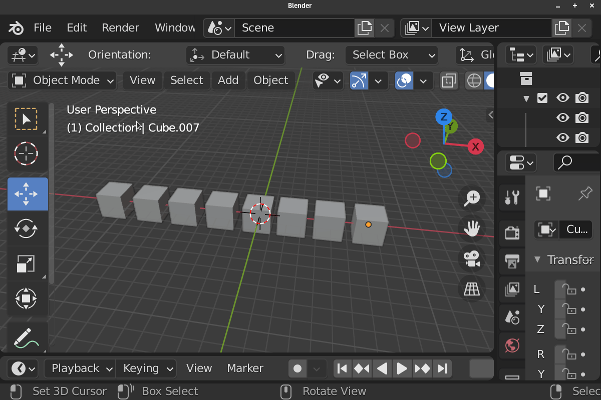Object Mode (Median)
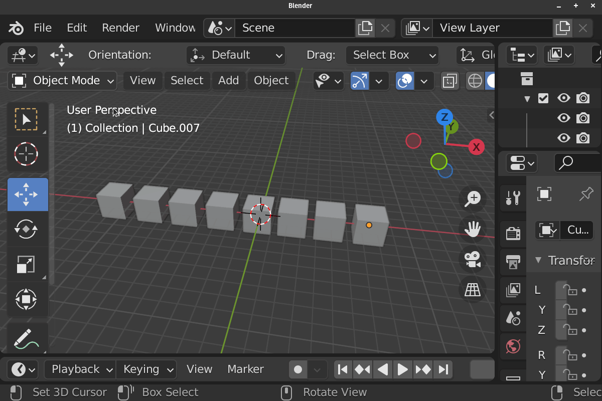Edit Mesh Mode (Individual)
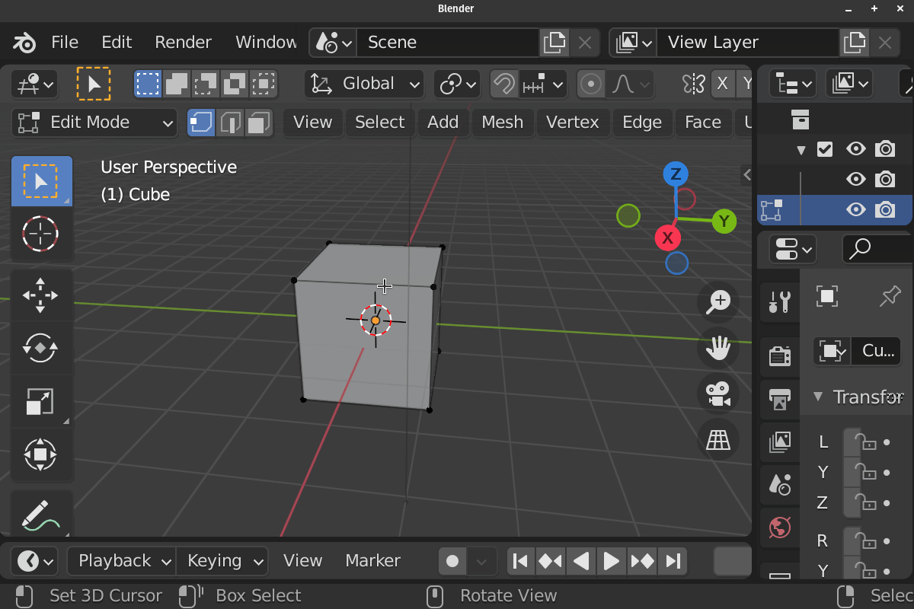Edit Mesh Mode (Median)
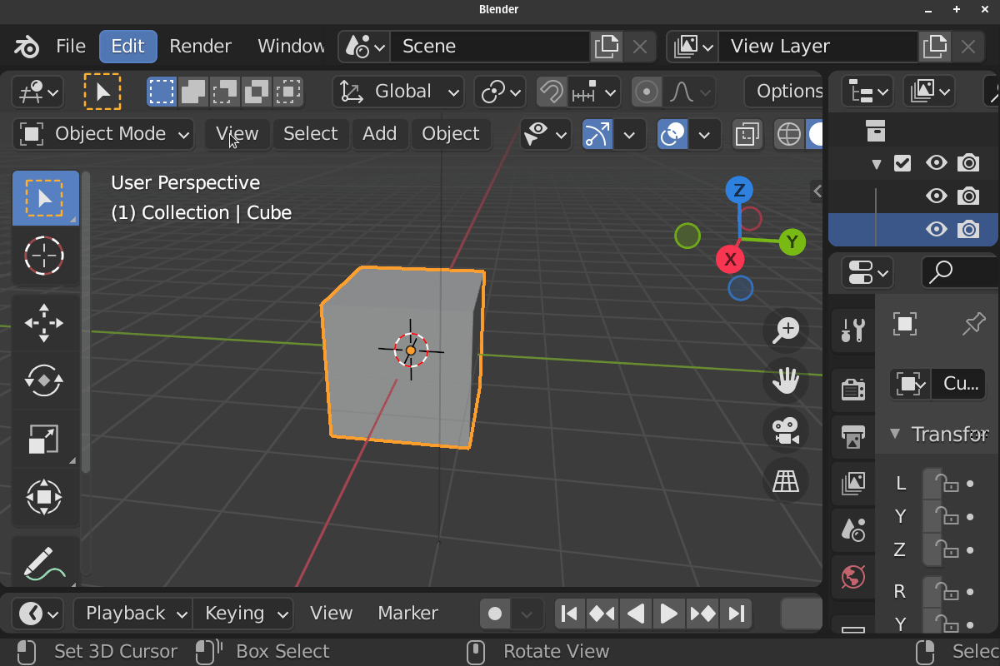Edit Curve Mode (Individual)
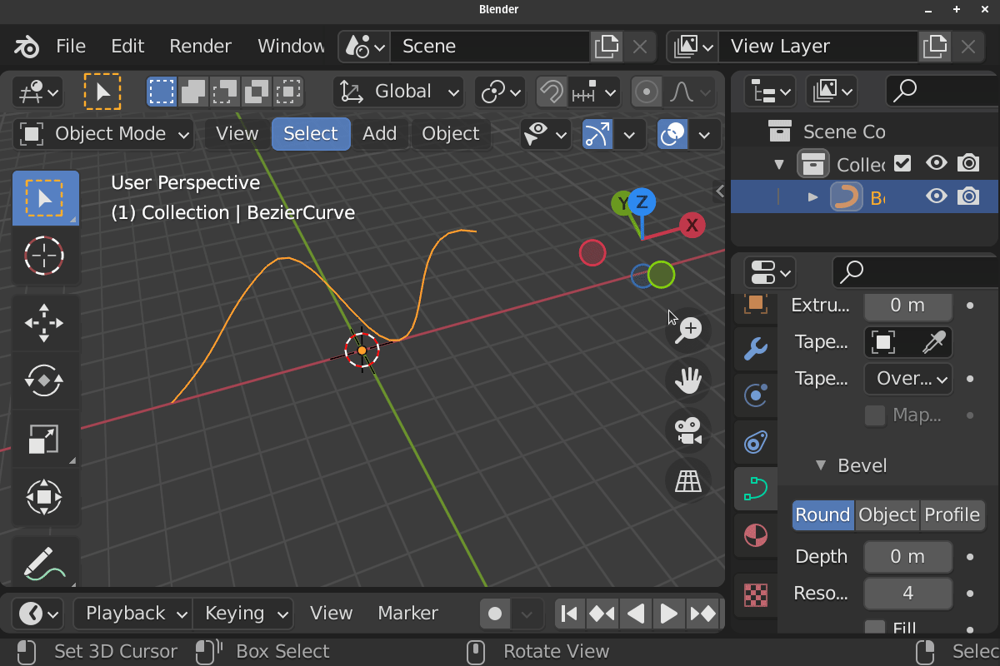Edit Curve Mode (Median)
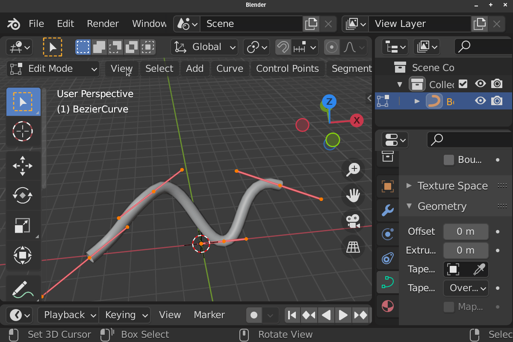Edit Armature / Pose Mode (Individual)
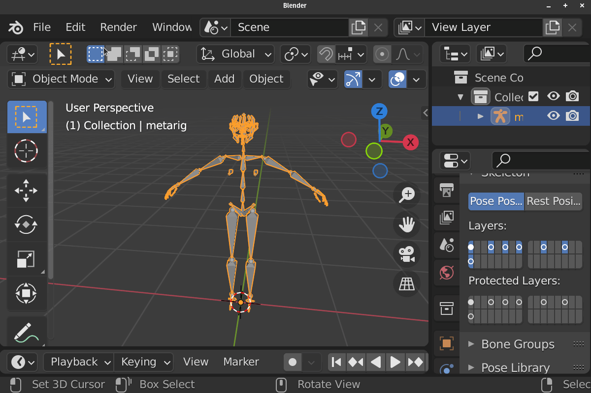Edit Armature / Pose Mode (Median)
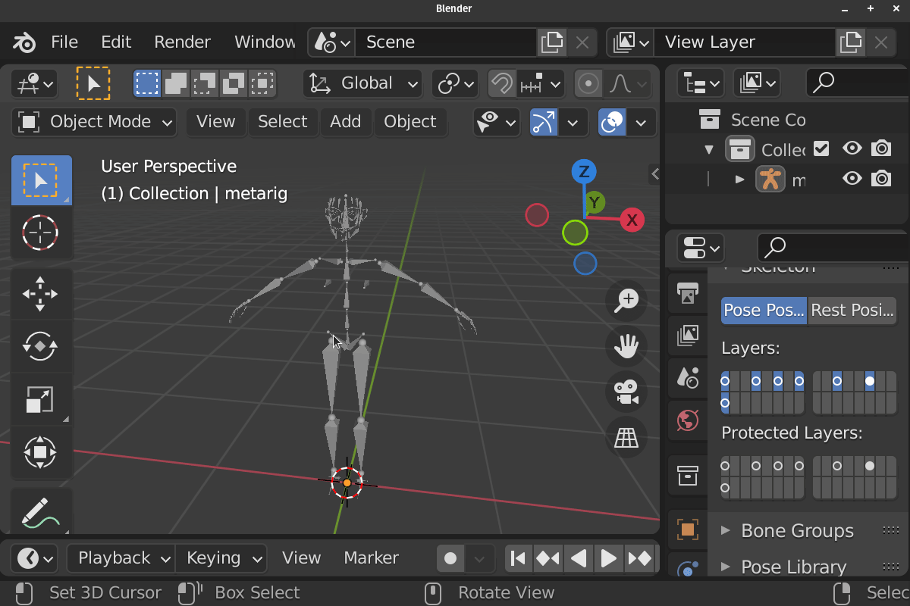This Operator Create bone from Selected Objects / Elements base on the context.
This Operator can Create One Bone at the Selected Midpoint or It can Create A Bone for each selected items.
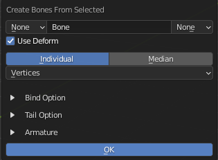Basic Parameter
Prefix: Add Prefix to Base name Base on Preferences
Base Name: Base Name of the Bone
Suffix: Add Suffix to Base name Base on Preferences
Deform: Turn On/Off Deform for created bone
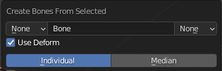Mode:
- Median
Create One Bone at the Selected Object / Elements
- Individual
Create Bones for each Selected Object / Elements
Contextual Option
Use Hierarchy (Individual with Object Mode Only)
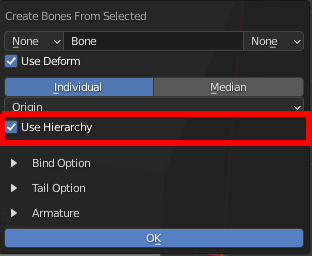Create the Bones with the Hierarchy mimicking the Reference Object’s Hierarchy
Position Mode (Object Mode Only)
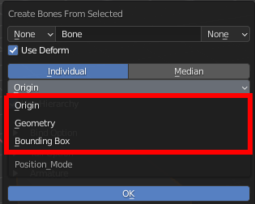Ways to Calculate Midpoint of the Objects
- Origin
Use Object’s Origin to create bone or calculate Median
- Geometry
Use Geometry’s Midpoint/Median for Mesh, Curve or Armature Object to create bone or calculate Median, Other type of Object will use it’s Origin
- Bounding Box
Use Geometry’s Bounding Box Center for Mesh, Curve or Armature Object to create bone or calculate Median, Other type of Object will use it’s Origin
Elements
Elements use to create the Bones
- Edit Mesh (Individual Mode Only)
Vertices
Edges
Faces
- Edit Armature / Pose
Center: Use Bone Center to Create Bone or to Calculate Median or Bounding Box
Head: Use Bone Head to Create Bone or to Calculate Median or Bounding Box
Tail: Use Bone Tail to Create Bone or to Calculate Median or Bounding Box
Bezier Handle (Edit Curve Only)
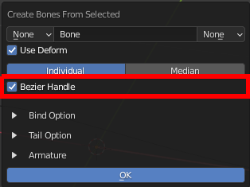Create Bones For Bezier Handle
Parent Bone (Edit Armature, Individual Mode and Own Armature Settings)
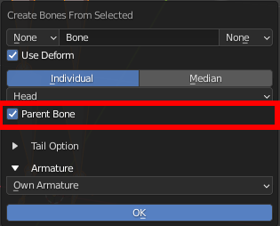Parent the created bone to it’s reference bone, this only works in Edit Armature Mode, Individual Mode, and Own Armature Settings.
Bind Option
Bind Mode
Method to bind the selected objects/elements to created bones
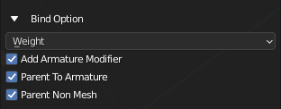- Weight
Create Vertex Group and using the created bones for mesh Object
- Sub Options
Add Armature Modifier: Add Armature Modifier to relevant objects
Parent To Armature: Parent relevant object to Armature
Parent None Mesh: Parent Non Mesh Object to created Bone
- Parent Bone
Parent Object / Objects to created Bone
Hook
Hook Curve Points to selected
Tail Option
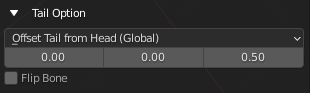Tail Mode
Set Up Bone’s Tail Position
- Offset Tail From Head (Global)
Offset the tail from the head by the offset Vector in the Global Space
- Offset Tail From Head (Local)
Offset the tail from the head by the offset Vector in the Local Space
- 3D Cursor
Use the position of 3D Cursor as the position of the bone’s tail
- Normal (Edit Mesh Only)
Offset the tail from the head by the offset Vector in using the Normal of the Edge Center, Face or Vertex as Angle
- Roll (Edit Armature and Pose)
Offset the tail from the head by the offset Vector in using the Roll of the Bone as Angle
- Extend (Edit Armature and Pose)
Align the Created bone to the Reference Bone’s, matching it’s orientation and roll
- Edit Mesh Mode:
- 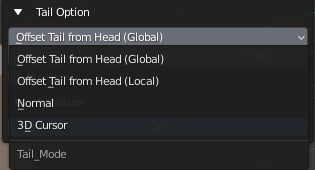
- Edit Armature / Pose Mode:
- 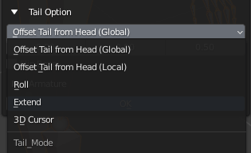
Tail Offset Amount
The Vector Used to offset the tail
Flip Bone
Flip the Position of the Head and Tail of the Created Bones
Armature Option
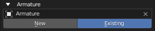Armature Name / Armature Picker
Name for New Armature or Pick a Existing Armature to Add Bone to
Armature Choice
Choose to create New Armature or Use Existing Armature
New: Create bone to a New Armature that uses the Name Above
Exist: Create bone to existing Armature above
Edit Armature Or Pose
If you are in Edit Armaute or Pose Mode, you have more options
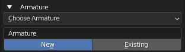Own Armature (Individual Only): The Bone Created will be created on it’s own Armature
Active Armature: The Bone Created will be created on the active Armature Object
Choose Armature: Works the Same way other Mode